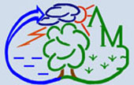

A.M.Obukhov Institute of Atmospheric Physics
Russian Academy of Sciences
Laboratory of Mathematical Ecology
|
RUSSIAN
Members History Current Projects Publications
|
ESTIMATIONS OF CARBON FLUXES IN STEPPE ECOSYSTEMS OF ÑENTRAL TUVINIAN BASIN
Golubyatnikov L.L.
, Zarov E.A.
Summary The Central Tuvinian Basin is located in the center of the Republic of Tuva. The region is characterized by a sharply continental climate. The main climatic characteristics of the territory under study are determined for the period 2009–2021 according to data from five meteorological stations located in the basin. To analyze the pattern of ecosystems on the territory of the Central Tuvinian Basin the images from the Landsat-8 satellite were used. Based on satellite information, 7 land units and 6 types of plain steppe ecosystems were identified in the Central Tuvinian Basin. According to the calculations, plain steppe ecosystems occupy about 10 thousand km2 in the basin. Based on the satellite images, a map-scheme for ecosystems pattern on the territory of the Central Tuvinian Basin was made. Estimation of net primary production for the steppe ecosystems in the studied region was obtained on the basis of a geoinformation-analytical method. To estimate the intensity of carbon dioxide flux from soils into the atmosphere (the soil respiration) in the basin, the climate-driven regression mode (T&P model) was used. The C–CO2 balance of studied steppe ecosystems was calculated. Plain steppes in the Central Tuvinian Basin serve as a significant sink of carbon dioxide from the atmosphere. The intensity of this carbon flux in the region can be estimated as 408±79 gCm-2yr-1. The annual absorption of carbon dioxide in the plain steppe ecosystems under study is evaluated as 4.1±0.8 MtC. Download (PDF) |